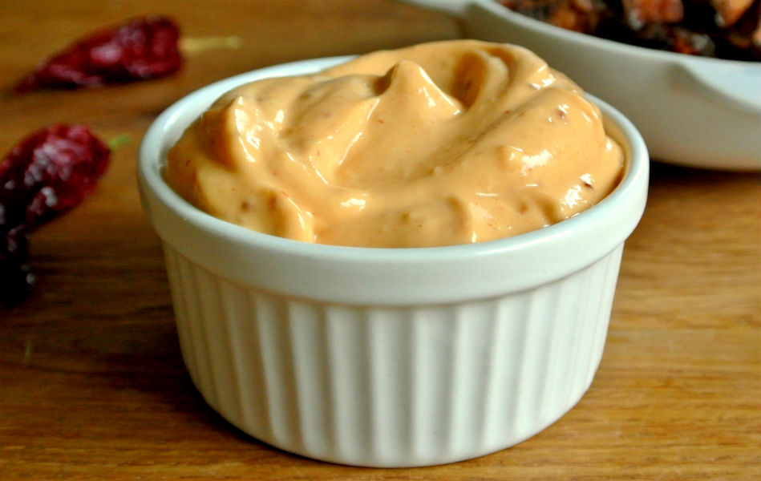

Página principal
Ingredientes
Pasos
Contacto
Tacos de camarón estilo Ensenada

Estos tacos son típicos de México y los podrás encontrar en los streetfoods de la zona.
Son deliciosos y
puedes hacerlos tú mismo de manera sencilla en casa siguiendo nuestra receta.
Vamos a tener que realizar diferentes elaboraciones
Mayonesa de chipotle

Cebollas encurtidas

Pico de gallo

Camarones estilo Ensenada